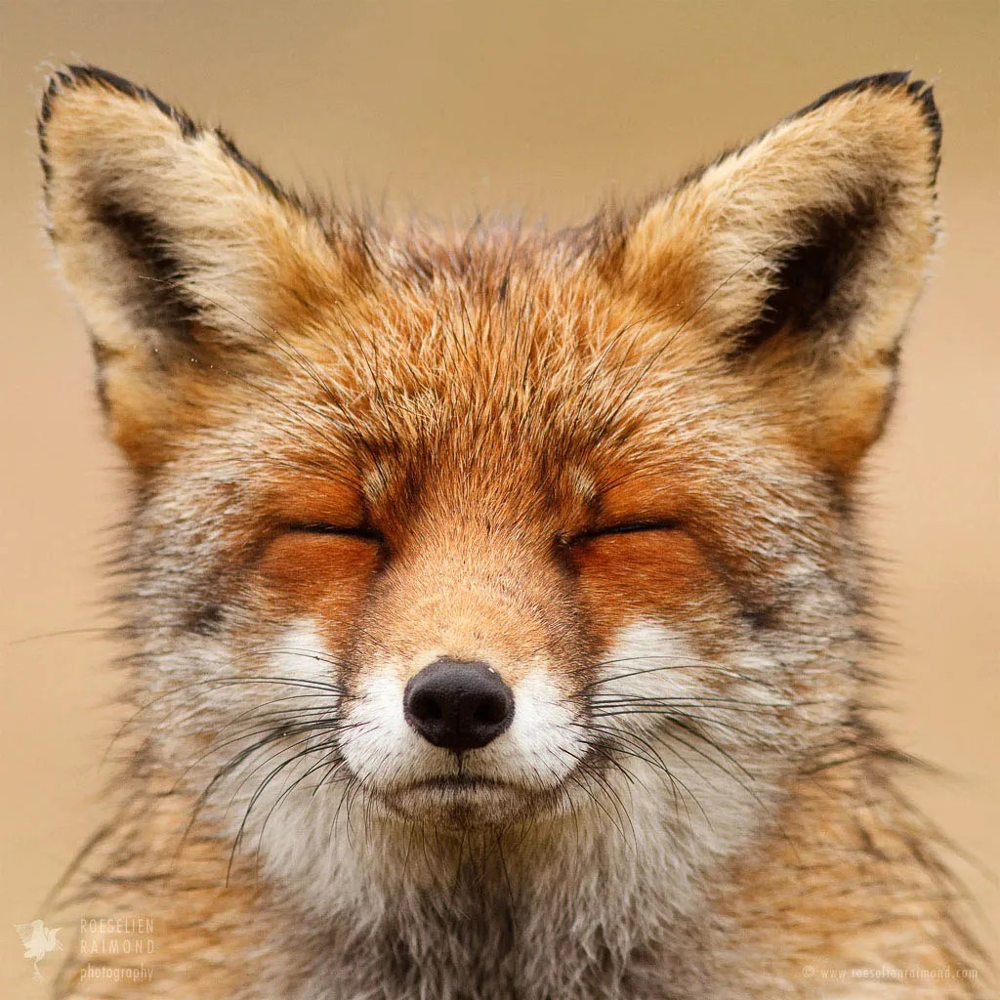
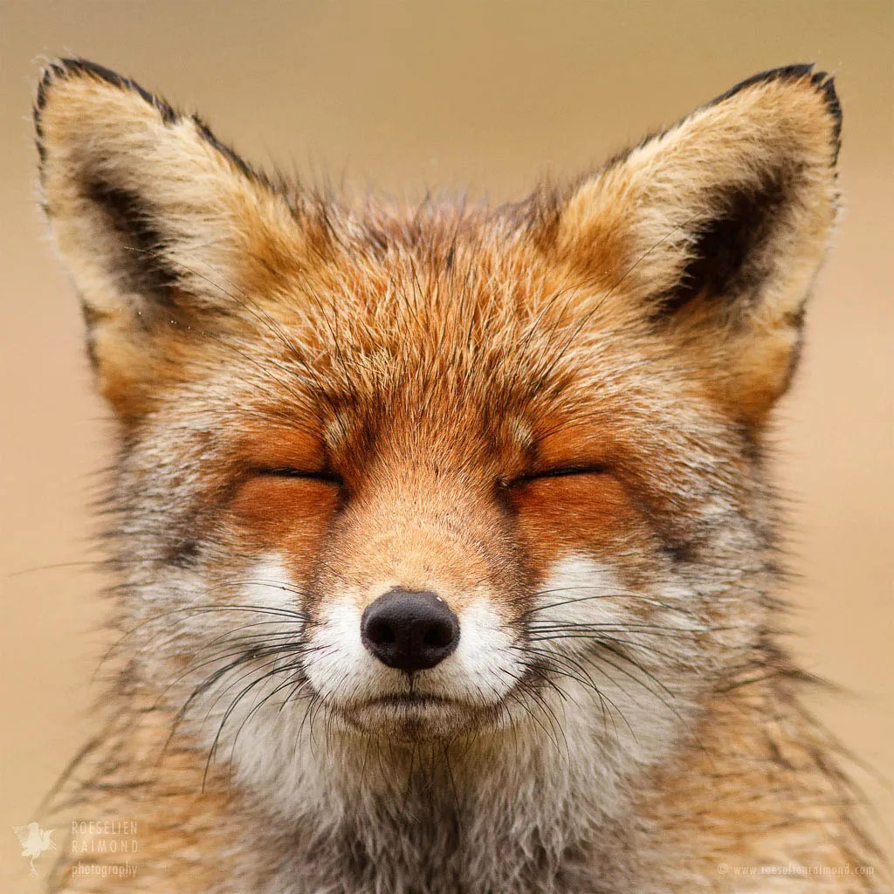

| Sadie | Kaylee | Ella | Brie |
|---|---|---|---|
| Sheep | Snakes | Cats | Puffins |
| Cows | Cats | Dragons | Eagle Ray |


This is a web page that I made in "Computing and the Digital World"
Isn't that neat?
🐛 My name is Charlene, but I go by Charlie! It's a nickname that I've used my whole life. I am a first year student interested in film, dance, and math. I was born and raised in New Haven Connecticut with four siblings, three of them are older. However, I am the first to go to college in Massachusetts. I love being here on campus and exploring the surrounding towns! My siblings have visited me on campus, and love the scenery here too.
🐛One fact about me is that I love food. While at school these past couple of semesters, I've visited many of the surrounding restaurants. My top two favorites are Johnny's and IYA. I love the cali club from Johnny's, and I especially love sushi from IYA. My favorite roll is their Dragon roll. The Dragon roll is a California roll with eel, avocado, and eel sauce.
Fun fact: Eel sauce is the best sauce ever.
🐛Something people don't know about me, is that I dance. I am a ballet dancer, and have been dancing since I was two years old. That's seventeen whole years. While I am unsure about majoring in dance, I am still taking dance and ballet courses here at Mount Holyoke. I am currently taking a ballet class this semester, and I plan on taking more next semester.
💚My favorite restaurant ➡ Cafe Fiore
💚A cause I'm passionate about ➡ Down Syndrome Association of Connecticut
💚The website I visit way too often ➡ Click for a Fun Surprise!
 

| Sadie | Kaylee | Ella | Brie |
|---|---|---|---|
| Sheep | Snakes | Cats | Puffins |
| Cows | Cats | Dragons | Eagle Ray |
🌿 © Charlie Penna | MHC 🌿
♥♥♥